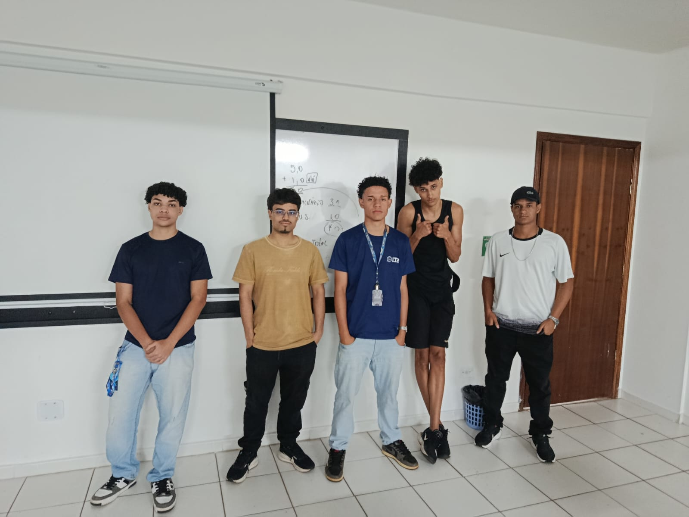

Controle Financeiro Inteligente
A VFinFlow é uma plataforma criada para ajudar empreendedores a organizar suas finanças de forma simples e eficiente. O sistema utiliza Inteligência Artificial para realizar previsões de lucro, controlar receitas e despesas, registrar transações e exibir gráficos financeiros, permitindo que o usuário tenha maior controle sobre seu negócio e possa dedicar mais tempo ao crescimento da empresa.
O cliente é uma empresa especializada em Nail Design, que enfrentava dificuldades para acompanhar seu fluxo de caixa e organizar suas finanças. Muitas das entradas e saídas eram registradas manualmente, dificultando a análise dos resultados e o planejamento financeiro.
Para solucionar esse problema, desenvolvemos a VFinFlow, uma plataforma que permite visualizar receitas, despesas, gráficos financeiros, previsões de lucro com Inteligência Artificial e integração com Open Banking. Essa integração possibilita a sincronização automática das movimentações bancárias, tornando o controle financeiro mais rápido, seguro e preciso.

Equipe VFinFlow - Grupo composto por 5 integrantes responsáveis pelo desenvolvimento do projeto.